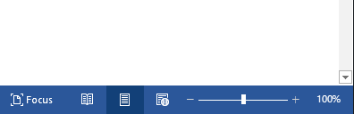
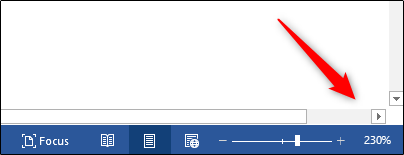

The need to zoom in and out of a Word document is quite common. It’s so common that Microsoft put a zoom bar on the right side of the status bar at the bottom of the window for quick access.
To use the zoom bar, click and drag the slider to the left or right to zoom out or in, respectively. As you do so, you’ll notice the page percentage decrease or increase.

Alternatively, you can click the minus (-) or plus (+) sign to zoom out or in at 10 percent increments.
If you zoom in to the point that parts of the Word document aren’t visible anymore, horizontally speaking, then a horizontal scroll bar will appear at the bottom of the page.
